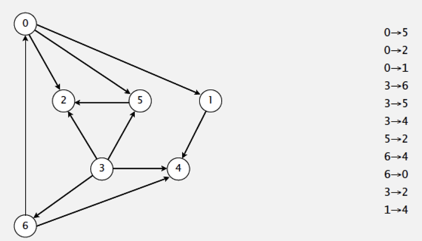
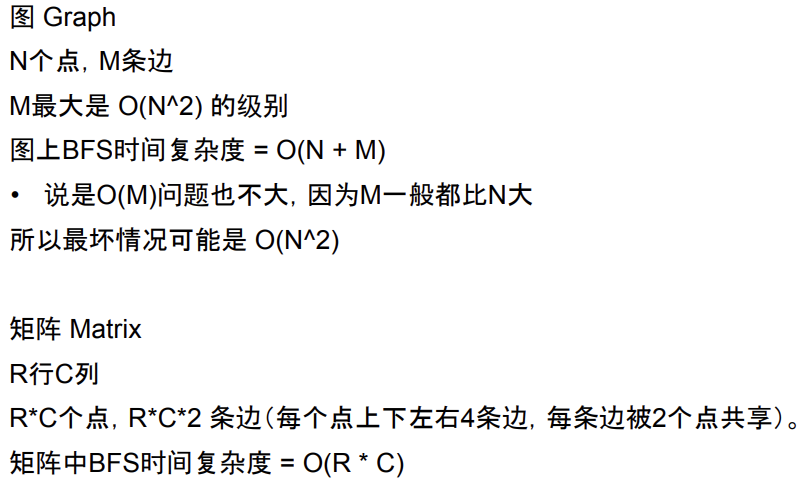

二叉树
图
- 拓扑
棋盘
 bfs 在树上和图 的区别
bfs 在树上和图 的区别
树上是父子关系,图是双向关系,平等,邻居关系.
图可能重复.
可以用hashmap
存在环,说明有重复的点进去
能用 bfs 解决的问题,一定不要用dfs,recursion实现的dfs可能会造成stack overflow
拓扑排序
https://algs4.cs.princeton.edu/42digraph/
Goal : given a set of tasks to be completed with precedence constraints
Topological sorting work on DAG --- a digraph that has no cycles.
- 有向图
- 无环
Dfs 方法
- Run depth-first search
- Return vertices in reverse post-order
Reverse dfs postorder of a DAG is a topological order

Postorder 4 1 2 5 0 6 3
===>
Topological order 3 6 0 5 2 1 4
Public class DepthFirstOrder{
Private boolean[]marked;
privateStack<Integer>reversePost;
publicDepthFirstOrder(DigraphG){
reversePost=newStack<>();
marked=newboolean[G.V()];
for(intv=0;v<G.V();v++){
if(!marked[v]){
dfs(G,v);
}
}
}
privatevoiddfs(DigraphG,intv){
marked[v]=true;
for(intw:G.adj(v)){
if(!marked[w])dfs(G,w);
}
reversePost.push(v);
}
publicStack<Integer>reversePost(){
returnreversePost;
}
}
course schedule
http://www.lintcode.com/en/problem/course-schedule/
http://www.lintcode.com/problem/course-schedule-ii/
sequence reconstruction
http://www.lintcode.com/problem/course-schedule-ii/
判断是否只存在一个拓扑的排序
只需要保证队列中一直最多只能有一个元素
找到 所有的,需要dfs
矩阵 中的宽度优先
bfs in matrix
